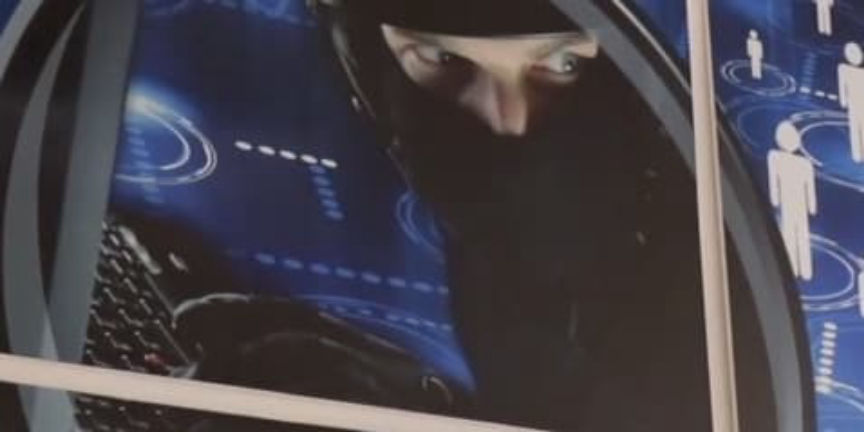
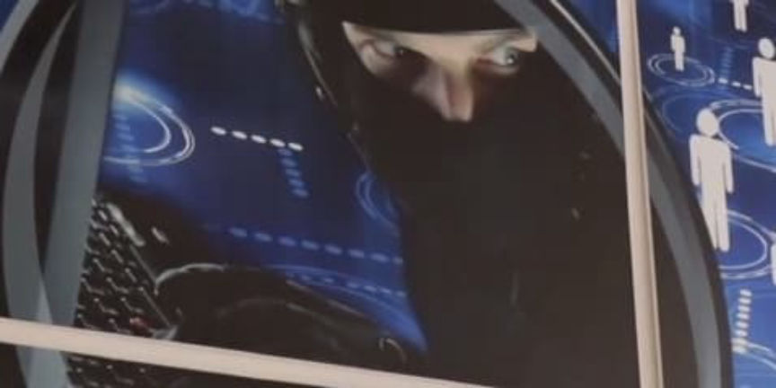

13 Arrested in Darkweb Child Abuse Case in Italy
~1 min read | Published on 2021-09-23, tagged Arrested, Child-Porn using 228 words.
Italian authorities arrested 13 suspects and identified 21 others in an operation against the sexual exploitation of children via sites on the darkweb.
Italian authorities launched an investigation in October 2019. The investigation targeted the users of child sexual abuse sites on the darkweb. The suspects allegedly facilitated the sharing of content depicting child abuse.

As part of the investigation, investigators went undercover on undisclosed darkweb child abuse sites. The investigators participated in the activity on the sites (understood to be forums) and acquired information that allegedly linked forum identities to suspects in 13 Italian regions. According to the announcement from the Italian State Police, investigators also obtained the identities of suspects in other countries.
After identifying the suspects, Italian police obtained search warrants covering the suspects’ electronic devices and residences. On September 22, 2021, the police executed the search warrants. The searches resulted in the seizure of a large number of electronic devices. On those devices, investigators located more than 250,000 pictures and videos depicting child abuse. The police arrested 13 suspects and are actively investigating another 21 suspects.
Analysis of the seized files to identify the victims of the abuse is ongoing.
Italian authorities also shared the data acquired from the operation with international law enforcement agencies. Investigations by these agencies may result in the identification and arrest of more suspects.
Italian authorities launched an investigation in October 2019. The investigation targeted the users of child sexual abuse sites on the darkweb. The suspects allegedly facilitated the sharing of content depicting child abuse.

This weird graphic provided by Italian police | Polizia di Stato
As part of the investigation, investigators went undercover on undisclosed darkweb child abuse sites. The investigators participated in the activity on the sites (understood to be forums) and acquired information that allegedly linked forum identities to suspects in 13 Italian regions. According to the announcement from the Italian State Police, investigators also obtained the identities of suspects in other countries.
After identifying the suspects, Italian police obtained search warrants covering the suspects’ electronic devices and residences. On September 22, 2021, the police executed the search warrants. The searches resulted in the seizure of a large number of electronic devices. On those devices, investigators located more than 250,000 pictures and videos depicting child abuse. The police arrested 13 suspects and are actively investigating another 21 suspects.
Analysis of the seized files to identify the victims of the abuse is ongoing.
Italian authorities also shared the data acquired from the operation with international law enforcement agencies. Investigations by these agencies may result in the identification and arrest of more suspects.